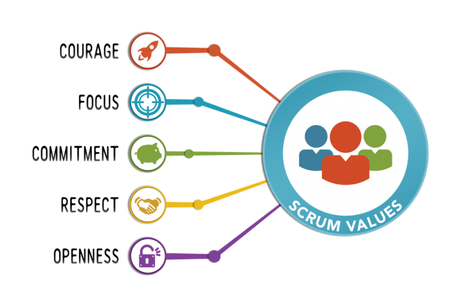

SCRUM
Scrum is een framework om op een flexibele manier (software)producten te maken.
Er wordt gewerkt in multidisciplinaire teams die in korte sprints,
met een vaste lengte van 1 tot 4 weken, werkende (software) producten opleveren.
Scrum is een term die afkomstig is uit de rugbysport.
Bij een scrum probeert een team samen een doel te bereiken en de wedstrijd te winnen.
Samenwerking is heel belangrijk en men moet snel kunnen inspelen op veranderende omstandigheden.
Scrum wordt vaak gebruikt bij producten waarvan de klant c.q. gebruiker nog niet goed weet wat hij wil en waarbij men al doende leert om de eisen en wensen beter te beschrijven en in bruikbare producten om te zetten.
Vaak weet men pas wat men wil als men het eerste product, het prototype,
ziet en dan worden alsnog de eisen aangepast.
Scrum heeft de flexibiliteit om met laat wijzigende eisen en wensen om te gaan.
Scrum valt onder de Agile-softwareontwikkeling.

V-MODEL
Het V-model besteedt in tegenstelling tot het watervalmodel evenwichtig aandacht aan ontwikkeling en verificatie.
Het softwareontwerp inclusief de verificatie is opgedeeld in een aantal fasen die elk een aantal vooraf gedefinieerde producten opleveren.
Wanneer de producten van een fase zijn opgeleverd,
vormen deze de basis voor de volgende fase,
er kan dus niet worden begonnen aan een nieuwe fase wanneer de producten van de vorige fase niet zijn opgeleverd (en goedgekeurd).
Dit herhaalt zich voor alle fasen,
en met elke nieuwe basis die wordt gevormd groeit het vertrouwen in het systeem.